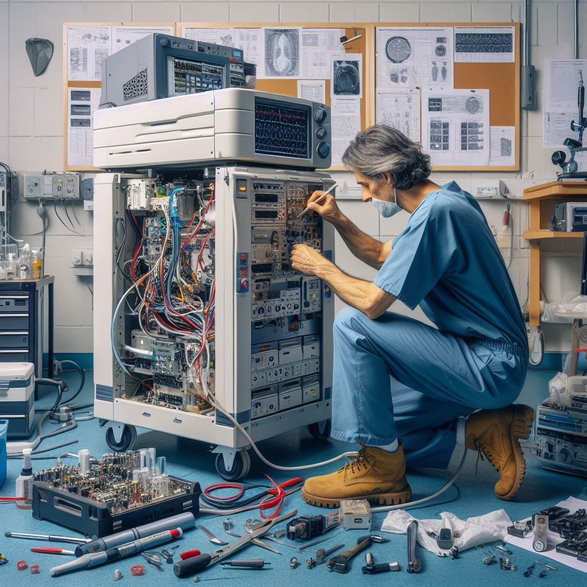

O Papel do Profissional de Manutenção de Equipamentos Biomédicos
O profissional de manutenção de equipamentos biomédicos desempenha um papel crucial na garantia da confiabilidade e do desempenho desses equipamentos em clínicas e hospitais. Sua expertise é fundamental para manter a qualidade dos serviços de saúde prestados. Vamos entender melhor o que envolve essa função.
Responsabilidades do Profissional de Manutenção de Equipamentos Biomédicos:
- Manutenção Preventiva: O profissional é responsável por realizar inspeções regulares, limpeza, lubrificação e calibração dos equipamentos. Essas ações visam prevenir falhas e garantir que os equipamentos funcionem de maneira confiável.
- Manutenção Corretiva: ocorre uma falha, o profissional de manutenção é chamado para identificar, diagnosticar e corrigir o problema. Isso envolve reparar ou substituir peças defeituosas.
- Calibração: que os equipamentos estejam calibrados corretamente para fornecer medições precisas é uma parte crucial do trabalho. Isso é especialmente importante em equipamentos de laboratório.
- Registro e Documentação: Manter registros detalhados das manutenções realizadas, bem como das calibrações e das peças substituídas, é fundamental para o acompanhamento e a conformidade regulatória.
- Treinamento e Atualização: Ficar atualizado com as últimas tecnologias e técnicas é essencial. O profissional de manutenção deve participar de treinamentos e cursos para se manter competente em sua área.
- Segurança: Garantir que os equipamentos estejam em conformidade com as normas de segurança é fundamental para proteger os pacientes e os profissionais de saúde.
- Gestão de Peças de Reposição: Manter um inventário adequado de peças de reposição é importante para garantir que as manutenções corretivas possam ser realizadas rapidamente.
Qualificações Necessárias:
- Formação técnica em eletrônica, engenharia biomédica ou áreas relacionadas.
- Conhecimento em eletrônica, mecânica e informática.
- Habilidades de solução de problemas.
- Conhecimento das regulamentações e normas aplicáveis na área biomédica.
O profissional de manutenção de equipamentos biomédicos desempenha um papel vital na garantia da qualidade dos serviços de saúde, contribuindo para a precisão dos diagnósticos e tratamentos médicos. Sua dedicação e expertise são fundamentais para o funcionamento adequado dos equipamentos e, consequentemente, para a segurança e bem-estar dos pacientes.